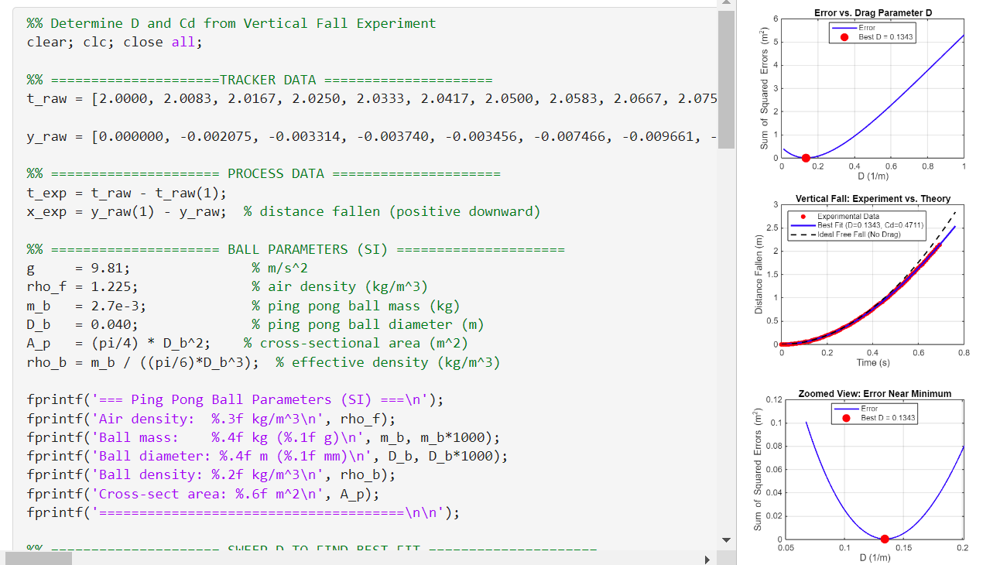
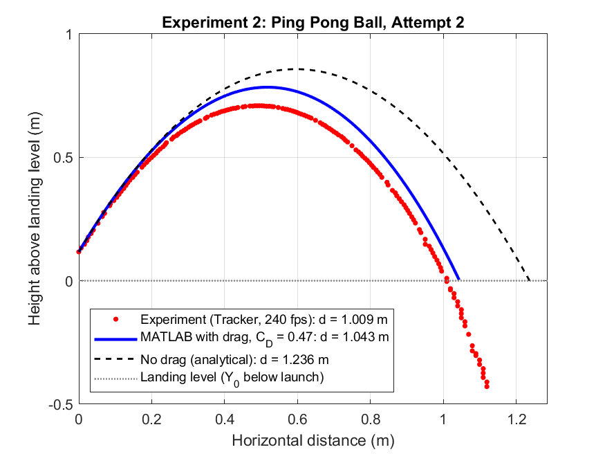
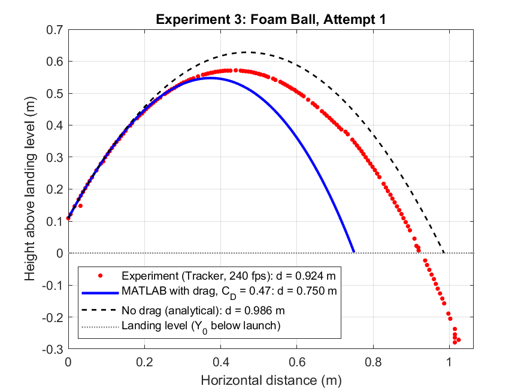
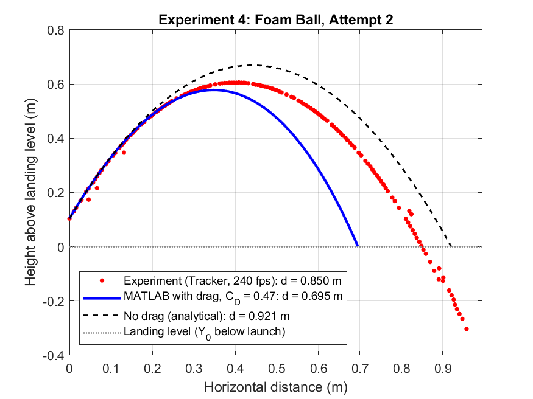

Video-Tracked Drag Coefficient Analysis
Sheet
04 of 08
- Dates
- Jan 2026 – Feb 2026
- Context
- ME 3456 Lab 1, Projectile Trajectories with Aerodynamic Drag, Northeastern University (team lab)
- Role
- Responsible for the team's MATLAB code and graphing
- Tools
- MATLAB · Tracker video analysis · least-squares curve fitting · finite-difference simulation (the lab's model)
Measured drag from high-speed video (Cd = 0.47) and compared four throws against drag and no-drag models; accounting for drag cut the ping pong ball's range-prediction error from 23–27% to 3–7%.
Key numbers
- Drag coefficient, vertical drop
- Cd = 0.47
- Video frame rate
- 240 fps
- Ping pong range error, no drag → drag model
- 23–27% → 3–7%
- Drag values swept
- 50,000



Objective
Measure the drag on light balls from video, and test whether a drag model predicts their trajectories better than a no-drag model.
What I did
- Wrote the team's MATLAB analysis and produced its graphs.
- Swept 50,000 candidate drag values (D = 0.01 to 1.0 1/m) against vertical-drop data and picked the least-squares best fit: D = 0.134 1/m, which gives Cd = 0.47.
- Analyzed two ping pong ball throws and two foam ball throws, filmed at 240 fps and tracked in Tracker.
- Corrected the time base to frame/240 s. Tracker had been left at its 30 fps default, which made every time 8x too long and every velocity 8x too small. A fitted-gravity check on each throw then gave 229–238 fps, confirming the fix.
- Fit each throw's launch velocity from the early flight (0.05–0.20 s after release) with least-squares line and quadratic fits.
- Compared each measured landing distance with a no-drag analytical model and the lab's quadratic-drag finite-difference model at Cd = 0.47.
- Back-solved, for each throw, the Cd that makes the drag model land at the measured distance.
Result
For the ping pong ball, the drag model cut range error from 23–27% to 3–7%. For the foam ball, Cd = 0.47 over-predicted drag: the model landed about 18% short, while the no-drag model came within 7–8%. A drag coefficient measured on one ball did not transfer to the other.
| Throw | Measured | Drag model, Cd = 0.47 | No drag | Back-solved Cd |
|---|---|---|---|---|
| Ping pong ball, attempt 1 | 1.303 | 1.393 (+6.9%) | 1.648 (+26.5%) | 0.69 |
| Ping pong ball, attempt 2 | 1.009 | 1.043 (+3.4%) | 1.236 (+22.5%) | 0.58 |
| Foam ball, attempt 1 | 0.924 | 0.750 (−18.8%) | 0.986 (+6.7%) | 0.10 |
| Foam ball, attempt 2 | 0.850 | 0.695 (−18.2%) | 0.921 (+8.4%) | 0.12 |
What I'd do differently
Next time I would use different tracking software and record at a higher frame rate.
Gallery





